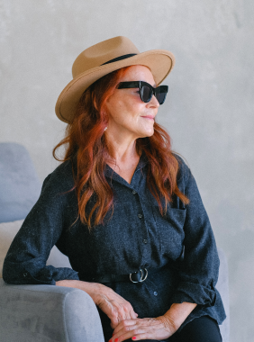

Как не утонуть в тревоге и управлять своими страхами
Содержание
Как понять, что отношения с мамой были
дисфункциональными и привели к травме?
Мама, привет!
Под под заголовок под заголовком
Под под под заголовок под заголовком
Под под под под заголовок под заголовком
Ну вот опять заголовок который как "привет мама"
Как понять, что вы страдаете от материнской травмы?
Заголовок h3
Один из самых важных навыков, которые может дать
работа с психотерапевтом - умение в разных ситуациях
по-разному обходиться со своими эмоциями. Снять этот
процесс с автопилота и перевести его в поле сознания.
Давайте, к примеру, разберем тревогу. Можно разложить
перед собой целую коллекцию доступных реакций и выбрать
нужную:
Мы знаем, что нуждаться в помощи и
поддержке в трудные периоды жизни абсолютно
нормально для любого человека, и стремимся сделать
психотерапию безопасной, удобной и доступной каждому
Ана Крымская
Что еще можно делать с тревогой?
Управлять ей через
что-то внешнее: включать музыку, которая создает другое
настроение, сесть за работу с цифрами, которая быстренько
активизирует другие участки мозга, читать блоги, которые
вас успокаивают и отвлекают.
А еще порой можно разрешить себе
тревогу заесть чем-то вкусным. Это, конечно, не самая
здоровая стратегия, но в ряде ситуаций можно считать
ее вполне рабочей. Особенно, когда внутренний ресурс
на нуле, а поддерживающее окружение не в доступе.
Онтогенез речи отражает групповой эриксоновский
гипноз.
Чем шире доступный вам репертуар реакций и чем более осознанно
вы можете выбирать из него то, что лучше всего подойдет в каждой
конкретной ситуации, тем больше будет ваша устойчивость к стрессу,
депрессии, неопределенности, да и к жизни в целом.
Мы знаем, что нуждаться в помощи и поддержке в
трудные периоды жизни абсолютно нормально для любого человека,
и стремимся сделать психотерапию безопасной, удобной и доступной
каждому
Одна из ключевых задач психотерапии как раз и заключается в том,
чтобы этот репертуар расширять и обучать человека пользоваться
доступными ему реакциями в той последовательности, пропорции и
объеме, которые подходят именно ему. Без оглядки на то, "как правильно"
или "как у других".

Чем шире доступный вам репертуар реакций и чем более осознанно вы
можете выбирать из него то, что лучше всего подойдет в каждой
конкретной ситуации, тем больше будет ваша устойчивость к стрессу,
депрессии, неопределенности, да и к жизни в целом.
А еще порой можно разрешить себе тревогу заесть чем-то вкусным.
Чем шире доступный вам репертуар реакций и чем более осознанно вы можете
выбирать из него то, что лучше всего подойдет в каждой конкретной
ситуации, тем больше будет ваша устойчивость к стрессу, депрессии,
неопределенности, да и к жизни в целом.
Упражнение #1
Нужно последовательно напрягать и расслаблять каждую мышцу в теле
на несколько секунд. Напрягать стоит довольно сильно, чтобы потом
отчетливее ощущать расслабляющий эффект. Начать можно с пальцев ног
и постепенно подниматься вверх. Смысл в том, чтобы через напряжение
дать стрессу выход, а затем вновь привести себя в спокойное состояние
через расслабление
Что еще можно делать с тревогой?
Управлять ей через
что-то внешнее: включать музыку, которая создает другое
настроение, сесть за работу с цифрами, которая быстренько
активизирует другие участки мозга, читать блоги, которые
вас успокаивают и отвлекают.
А еще порой можно разрешить себе
тревогу заесть чем-то вкусным. Это, конечно, не самая
здоровая стратегия, но в ряде ситуаций можно считать
ее вполне рабочей. Особенно, когда внутренний ресурс
на нуле, а поддерживающее окружение не в доступе.
Чем шире доступный вам репертуар реакций и чем более осознанно
вы можете выбирать из него то, что лучше всего подойдет в
каждой конкретной ситуации, тем больше будет ваша устойчивость
к стрессу.
Чем шире доступный вам репертуар реакций и чем более осознанно
вы можете выбирать из него то, что лучше всего подойдет в каждой
конкретной ситуации, тем больше будет ваша устойчивость к стрессу,
депрессии, неопределенности, да и к жизни в целом.
Упражнение #2
Нужно последовательно напрягать и расслаблять каждую мышцу в теле
на несколько секунд. Напрягать стоит довольно сильно, чтобы потом
отчетливее ощущать расслабляющий эффект. Начать можно с пальцев ног
и постепенно подниматься вверх. Смысл в том, чтобы через напряжение
дать стрессу выход, а затем вновь привести себя в спокойное состояние
через расслабление
Чем шире доступный вам репертуар реакций и чем более осознанно вы можете
выбирать из него то, что лучше всего подойдет в каждой конкретной
ситуации, тем больше будет ваша устойчивость к стрессу, депрессии,
неопределенности, да и к жизни в целом.
Чем шире доступный вам репертуар реакций и чем более осознанно вы можете
выбирать из него то, что лучше всего подойдет в каждой конкретной
ситуации, тем больше будет ваша устойчивость к стрессу, депрессии,
неопределенности, да и к жизни в целом.
Одна из ключевых задач психотерапии как раз и заключается в том, чтобы этот
репертуар расширять и обучать человека пользоваться доступными ему реакциями
в той последовательности, пропорции и объеме, которые подходят именно ему.
Без оглядки на то, "как правильно" или "как у других".
Упражнение #1
Нужно последовательно напрягать и расслаблять каждую мышцу в теле
на несколько секунд. Напрягать стоит довольно сильно, чтобы потом
отчетливее ощущать расслабляющий эффект. Начать можно с пальцев ног
и постепенно подниматься вверх. Смысл в том, чтобы через напряжение
дать стрессу выход, а затем вновь привести себя в спокойное состояние
через расслабление
Откликается проблема?
Поможем подобрать специалиста по работе с подобным запросом